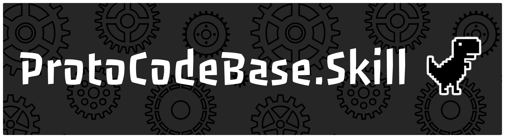

Agent Skill Repository
不要让你的 Agent 造轮子。
让它少读一点，少猜一点，少在上下文里迷路。让它沿着成熟软件的骨架， 把你的需求变成可以落地的代码。
Need First
代码不是目的，需求才是。
一次软件修改值得被保存的，不只是文件差异，还有需求如何被理解、 如何被拆解、如何被计划、如何被执行。
Engineering Memory
你的 Intent 仍然属于你。ProtoCodeBase 持久化的是程序规范化后的请求、 Agent 自主执行前的计划，以及真正落到代码里的变更。
Token Economy
Industrial Templates
成熟软件已经走过的路，不必每次从空白文件重新发明。
文件管理、权限、协作、编辑器、工作流、历史记录、错误处理、部署方式： ProtoCodeBase 希望把这些工业实践沉淀成 Agent 可以检索、裁剪、合并的说明书。
Install
npx skills add https://github.com/OhMyYuwan/ProtoCodeBase.Skill.git --skill acp-v1-0-0安装后，仓库声明自己的协议版本；Agent 读取对应 Skill， 再按照协议说明书进入项目，而不是每次重新拆解整个系统。